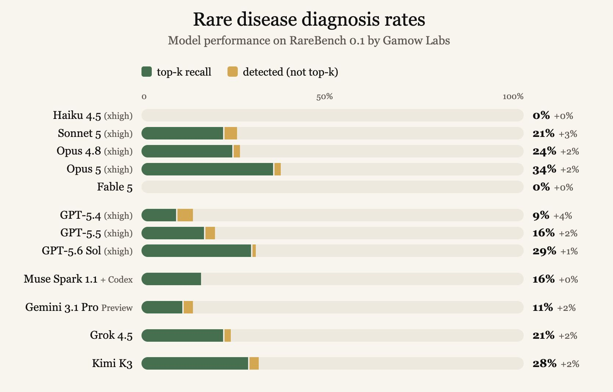
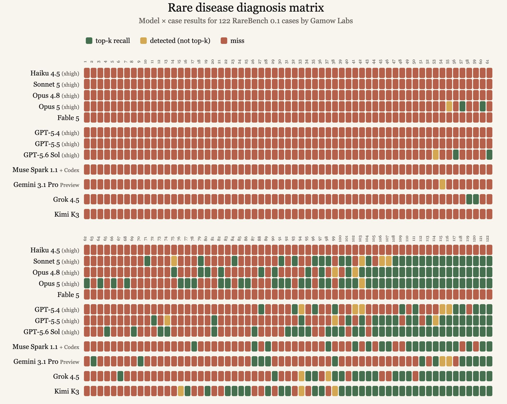
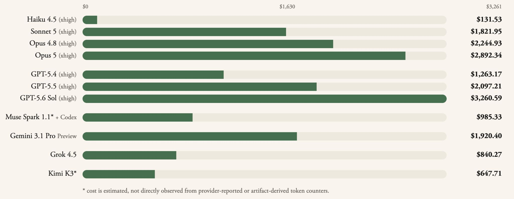
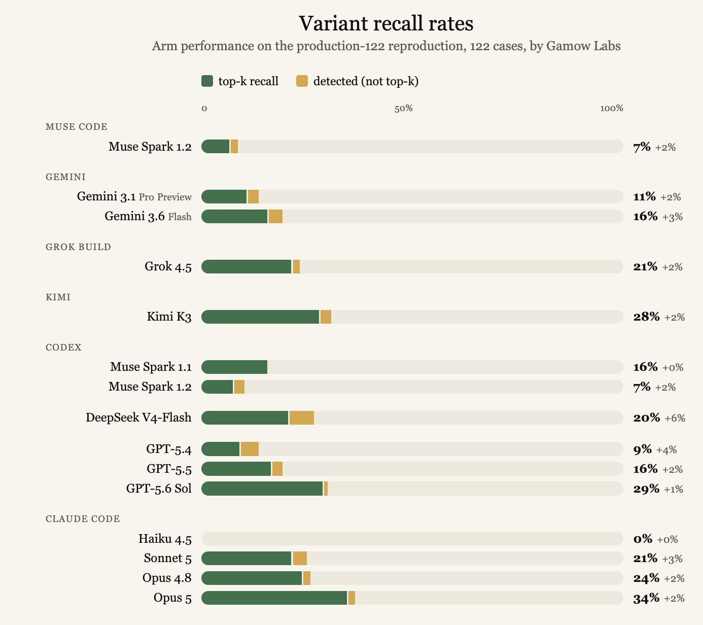
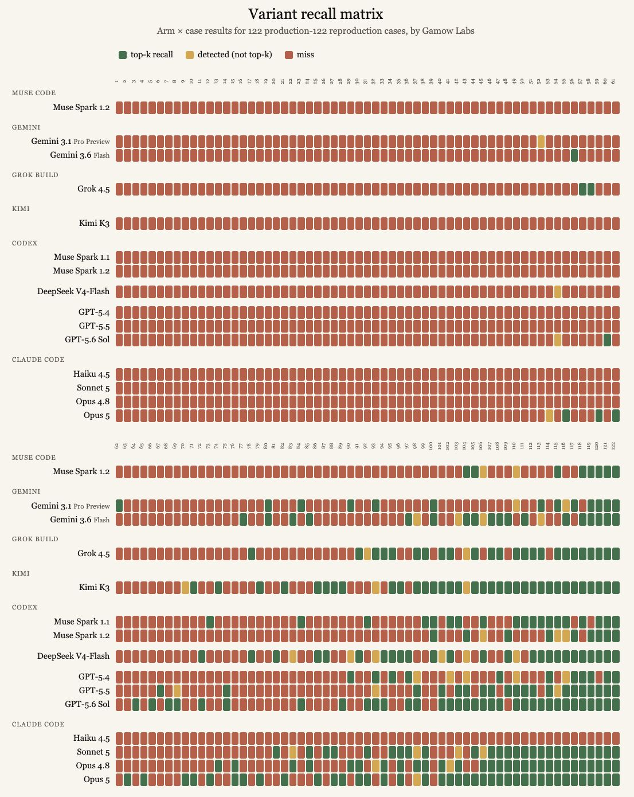
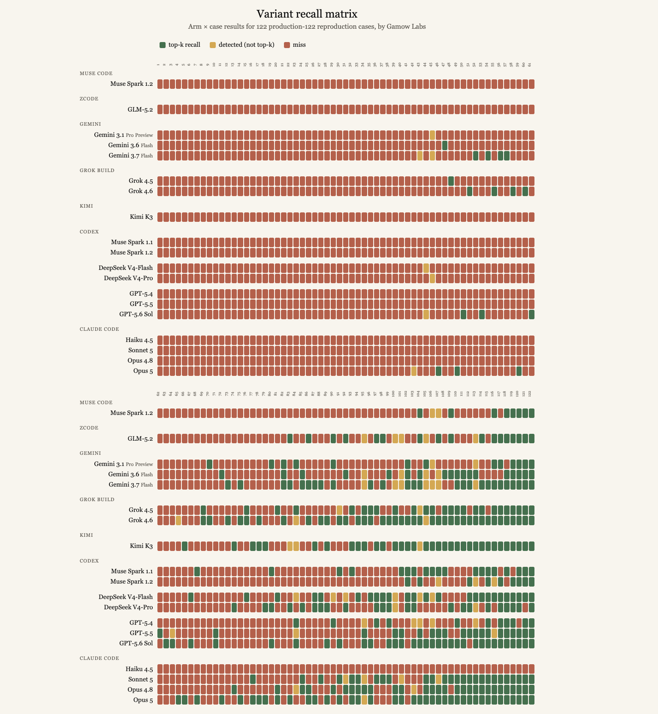

About 30% of newborns with a suspected rare disease receive a diagnosis. We think that number should be much higher.
At Gamow Labs, we’re building AI systems to make state-of-the-art neonatal genomic care more accessible and to push the field toward better diagnostic rates.
When you’re working with AI, progress depends on having a strong metric to optimize against. There needs to be a standardized way to measure whether your model or harness is actually getting better.
That’s why we are building RareBench. As it exists today, it’s a 122-case benchmark for rare genetic disease diagnosis. We see this as an early step toward giving the field a better way to measure how well AI can solve one of medicine’s hardest diagnostic problems.
Why we are sharing RareBench
By regularly publishing RareBench results, we’re hoping to encourage the frontier AI labs to make progress on this problem too. More hands on it means more babies get diagnoses.
Right now we are using RareBench at Gamow Labs to understand the capabilities of different agentic systems at genomic variant interpretation generally, and to optimize the performance of George-0.1, our own rare disease diagnosis agent, specifically.
Rare disease variants have many of the properties we look for in a task that can benefit from reinforcement learning and increasingly capable agents.
- It’s verifiable: there is a causal variant or ground truth diagnosis, so the agent’s response either matches the answer key or it doesn’t.
- It’s agentic: diagnosing a rare genetic disease requires searching databases, inspecting variant annotations, reasoning about inheritance, checking population frequencies, comparing phenotypes, examining genomic regions, validating hypotheses, and revisiting earlier assumptions. The agent may need to make dozens of tool calls before arriving at an answer.
- It’s unsaturated: genomic interpretation remains difficult even for highly capable systems. There is substantial room for better models, better harnesses, and better tool use.
- It’s meaningful: a better answer here is not just a higher benchmark score. It can mean a child and their family finally receiving a diagnosis.
What RareBench measures
Given a patient’s phenotype and genome, RareBench attempts to identify the causal variant or variants responsible for the disease.
We measure whether the correct causal variant appears among the system’s top hypotheses. Additionally, we separately track cases where the system identifies the correct variant but does not rank it highly enough to make the top-k cutoff.
This distinction is useful because it separates two different failure modes. An agent might completely miss the relevant biology, or it might find the right variant somewhere in a large search space but fail to prioritize it correctly. For an agent designed to assist with diagnosis, both are important.
This is how we built our scoring framework for the eval: a top-k recall, a detection that fell short of top-k, or a miss.
We have done three passes so far, here’s how they went.
Pass 1: OpenAI, Anthropic, Meta, Google, X, and Kimi
For our first pass, we ran 12 frontier models and agentic harnesses against the full 122-case set, and these were our findings:


The initial results are encouraging, although there is clearly a long way to go.
Claude Opus 5 takes the top spot on the leaderboard at 34%, with GPT-5.6 Sol close behind at 29%. The more interesting result, to us, is Kimi K3: it lands within striking distance of the top two models’ diagnosis rate at roughly a fifth to a quarter of the cost, with a performance success rate of 28%.
The cost breakdown also yielded interesting results. For instance, running 122 cases through the Anthropic and OpenAI models above costs on the order of $3,000 vs. Kimi’s near $700. That’s an enormous gap in cost for a meaningful diagnosis rate. If the goal is making this technology available to every NICU rather than only the ones that can afford the most expensive option, that cost curve matters as much as leaderboard position.

The benchmark is also difficult enough that even the strongest systems currently solve only a minority of cases. Claude Fable 5 and Haiku 4.5 achieve 0% on the benchmark. That spread is one of the reasons we think this benchmark is useful. These are all highly capable frontier systems, yet their performance on this particular task varies dramatically.
Additionally, error patterns across models were more orthogonal than we expected. Different systems fail on different cases, which is a strong early signal that an ensemble of these systems could meaningfully outperform any one of them individually. Even models that lag on aggregate diagnosis rate, like Grok, Muse Spark, and Gemini, land successes on specific cases where every other model in the field misses.
Pass 2: Re-runs and adding DeepSeek
Since our initial preview, we reran the full 122-case set as a reproducibility check and layered in three new models.
Every model from the original round scored identically the second time, which we take as a good early sign that RareBench itself is stable, not just that any one model’s score is stable.


Our biggest win from this run was seeing the performance-to-cost ratio of DeepSeek V4-Flash. It scored about 20% for just $10.53 to run the entire benchmark.
Meta’s Muse Spark 1.2 regressed significantly from 1.1, dropping from 16% to 7%. We haven’t inspected the traces in depth yet, but our current best guess is that points to changes made in post-training for Muse’s new harness, since the result was identical whether we ran 1.2 through its own harness or through Codex.
Gemini 3.6 Flash improved over Gemini 3.1 Pro Preview and uniquely solved case 56, a case every other model and harness in this benchmark missed.
Pass 3: More re-runs, and adding ZCode
With about 2 weeks in between Pass 1 and Pass 3, the leaderboard shifts.
![Horizontal bar chart of variant recall rates on the third 122-case run, grouped by harness. Grok 4.6 now leads at 35% (+2%), ahead of Opus 5 at 34% (+2%), GPT-5.6 Sol at 29% (+1%), Kimi K3 at 28% (+2%), Gemini 3.7 Flash at 25% (+7%), Opus 4.8 at 24% (+2%), Sonnet 5 and Grok 4.5 at 21%, DeepSeek V4-Flash at 20% (+6%), DeepSeek V4-Pro at 19% (+2%), Muse Spark 1.1, Gemini 3.6 Flash and GPT-5.5 at 16%, GLM-5.2 at 14% (+4%), Gemini 3.1 Pro Preview at 11%, GPT-5.4 at 9%, Muse Spark 1.2 at 7%, and Haiku 4.5 at 0%.](assets/rarebench-pass3-recallrates.png)
Grok 4.6 has moved into first place on RareBench, solving 35% of cases and edging out Claude Opus 5 at 34%. What makes the result particularly interesting is the cost: our production runs put Grok 4.6 at roughly $1.98 per case, compared with $9.35 for Opus 5. In other words, Grok is achieving slightly higher diagnostic performance at roughly one-fifth the cost.
![Table of model cost across 17 arms running 122 cases each, showing cost basis, token counts, total cost and cost per case. Opus 5 is the most expensive at $9.35 per case, followed by GPT-5.6 Sol at about $8.20, Opus 4.8 at $6.30, GPT-5.5 at about $5.69, Gemini 3.1 Pro Preview at about $4.91, Sonnet 5 at $3.40, GPT-5.4 at about $2.92, Grok 4.5 at $2.87, GLM-5.2 at about $2.08, Grok 4.6 at $1.98, Gemini 3.7 Flash at about $1.50, the Muse Spark models at about $1.36, Gemini 3.6 Flash at about $1.03, Haiku 4.5 at $0.21, DeepSeek V4-Pro at about $0.17, and DeepSeek V4-Flash at about $0.07. Total spend across all arms is $6,515.](assets/rarebench-pass3-costs.png)
DeepSeek’s new V4 Pro release was another interesting result. We accessed the model through DeepSeek’s first-party API on the day of release and saw 19% on RareBench, slightly below V4 Flash at 20%. That was lower than we expected given the model’s broader capabilities and the performance we have seen from other recent releases. Because the evaluation happened immediately after launch, we are reluctant to draw strong conclusions from a single run. We will re-benchmark the model and report back if the result changes.
GLM-5.2 currently lands at 14%. That is a meaningful result on a difficult benchmark, but it trails Kimi K3 at 28% despite the two models attracting considerable attention for similar coding and agentic use cases. Where GLM had a detection, Kimi usually agreed and detected the same variant, but Kimi found twice as many detections overall. This is another example of why we think task-specific evaluation matters. General impressions of a model’s capabilities, and even performance on adjacent benchmarks, do not necessarily predict how well it will perform when asked to investigate a rare genetic disease.

The leaderboard is becoming a useful measurement of something we care deeply about: how effectively an AI system can actually reason through a patient’s genome and find the variant responsible for their disease.
The frontier is moving quickly. We intend to keep measuring it.
The potential impact of this work
This eval is the first step in a long journey toward George, our agentic system for diagnosing rare genetic disease. A benchmark like RareBench doesn’t diagnose anyone on its own. What it does is give us, and the rest of the field, a shared, quantitative target: a way to know whether a change to a harness, prompt, or tool integration is actually making the system better.
We believe AI will revolutionize genomics, and we hope to play a small part in distributing better healthcare to every NICU baby who needs a diagnosis. We’ll keep publishing RareBench results as we iterate, including where we fall short.
If working on agentic systems, largely harness and tool engineering, for a deeply mission-driven company at the intersection of AI and biology resonates with you, we’re hiring!